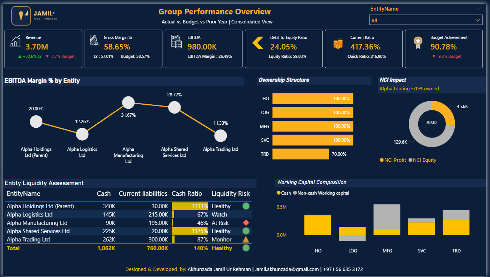
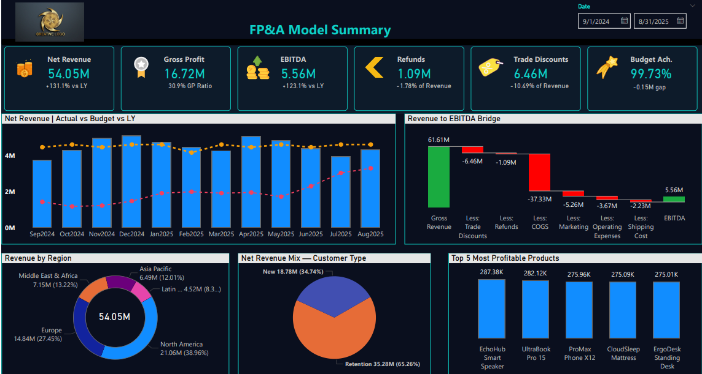
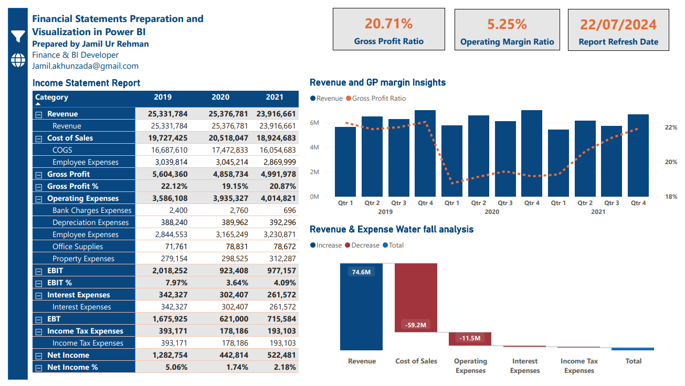
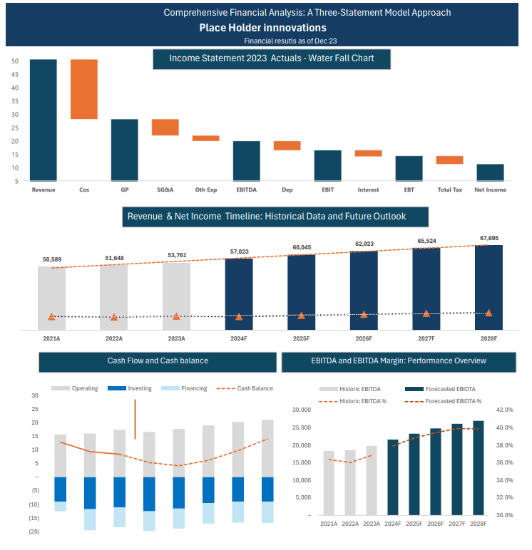
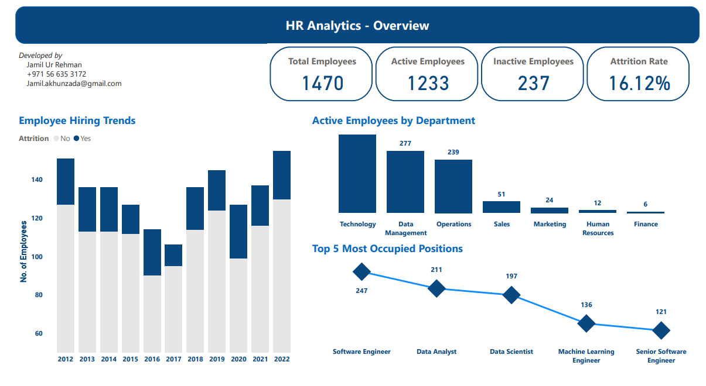

I'm Jamil, an ACCA-qualified FP&A and finance analytics professional with 8+ years of experience across audit, accounting, financial planning, and business intelligence.
Currently supporting a reputable sports and education group across 7+ entities, I focus on:
Each project uses fictional data built to mirror real finance work. Click a project to see the dashboards and a plain-English explanation of what it does.

Built a single Power BI solution to view individual entity financial statements and consolidated group financial statements in one place, with intercompany eliminations and non-controlling interest adjustments.
View project →
An integrated Power BI dashboard suite covering sales, customer behaviour, profitability and accounts receivable ageing, with DAX-driven Revenue-to-EBITDA bridges and interactive what-if scenarios to support forecasting and decision-making.
View project →
A full income statement, balance sheet and cash flow statement built straight from the accounting database. The figures refresh automatically and check themselves for errors.
View project →
An integrated five-year model linking the income statement, balance sheet and cash flow, with scenario analysis, sensitivity tables and DCF valuation schedules to assess performance and enterprise value. Available to download.
View project →
Headcount, demographics, performance reviews and attrition for a 1,470-person workforce, showing where turnover is highest by role, age group and year. Useful input for headcount and payroll planning.
View project →Short articles on how finance teams can work smarter with automation, BI and AI.
Payment terms, renewal clauses, the support behind a balance: the answer usually exists somewhere. How AI can find it faster, with the evidence attached and a person still checking it.
Read article →They aren't rivals. How I decide which tool does which job across modelling, data preparation and reporting, and where Python and AI fit into a modern FP&A workflow.
Read article →How I use AI coding assistants, Python, Excel and Power Automate to take hours of repetitive work out of month-end, without giving AI access to the company's financial data.
Read article →Open to FP&A, financial analysis and finance business-partnering roles in the UAE or abroad.